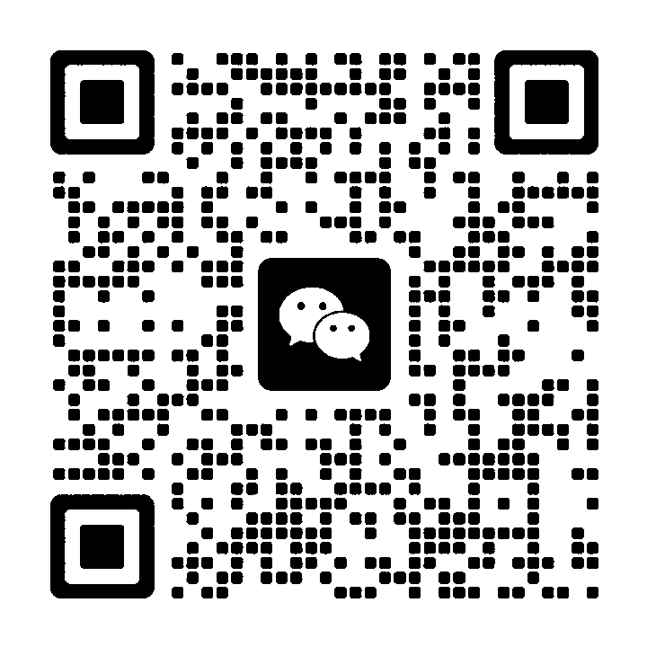

2026-9-19 · 周六
悉尼 City
10 席 · 中文讲

这是哪一门
《詹明明的商业课》分三门，各自独立，分开报名：产品课（这一门）、内容课、AI 课。
产品课只讲线上产品：怎么判断你做的东西成不成立，做出来之后怎么让它有人买。 内容课讲获客和自媒体，AI 课讲人机协同和系统搭建。那两门稍后再开。
那天怎么过
- 09:30
- 签到
- 10:00
- 上午
- 12:30
- 午餐 · 一小时，自理（课程不含餐）
- 13:30
- 下午
- 17:30
- 结束
不教工具怎么用。六段按顺序走，后一段要靠前一段的结论。
- 你做的那个东西，还不算产品 人人都做得出来的，叫物品。把物变成商品的是顾客，不是你。这条差别不先摆清楚，后面全是白使劲。
- 判据不能归干活的那个人所有 你现在既是做的人，又是给自己打分的人。所以你看不出问题在哪。改了三版还是没人买，也是这个原因。
- 需求嗅探：哪些是真需求，哪些是你自己想出来的 还没想好做什么的，这一段就是给你的。去哪儿看，看什么，怎么判断一个需求真的有人在为它花钱。已经在做的人，用它回头检一遍自己那个。
- 验证四问 反馈从哪来，多久拿到，能不能被推翻，能不能借别人的。这把尺子你带得走，以后每个新点子自己就能过一遍。
- 十个人，一个一个上来 把你的产品拿出来，当场过一遍四问，我现场拆。还没开始做的，就拿你正在考虑的那个方向。这是那天最花时间的部分，也是你来的原因。
- 收尾：把你那张纸写完 卡在哪一问，下一步动什么。
带上你的产品，能当场打开给我看的那个版本就行。还没开始做的，带上你正在考虑的两三个方向。
你带走什么
- 需求嗅探清单。怎么看出哪些是真需求。
- 验证四问。这把尺子你带得走。
- 你自己那张诊断纸。卡在哪一问，下一步动什么。
给谁
两种人这天都覆盖。
已经在做线上产品或工具的
独立开发、出海、SaaS、副业项目都算。东西做出来了，没人知道，也没人付钱。
想做但还不知道做什么的
有时间有能力，就是不知道往哪儿使劲，或者几个方向定不下来。
不覆盖两种人：做线下生意的老板（这一门只讲线上产品），想学某个工具怎么操作的。
怎么报名
$880+ GST · 首期价
十个位子，坐满为止。第二期起 $1,080 + GST。
加我微信，说一句你在做什么，或者在考虑做什么。
合适的话我把转账信息和位子确认发给你。本地转账，没有手续费。tax invoice 之后发到你邮箱，地址开课前几天单独发。

微信号 jamesgong01
我是谁
每周四上午我在悉尼 CBD 组织一个免费的 AI 聚会，办到现在报名过的有八十多人。
大部分和你一样，手上都有一个正在做的东西：Mac 工具、儿童绘画视频平台、买房 AI 助手、 跨境独立站、给会计事务所做的税务平台。9 月 19 号这一天，就是从那些聊不完的问题里长出来的。
我自己：前 NICTA / CSIRO 研究员。没有员工，一个人做产品、上线、找用户、收钱， 运营数十款面向海外市场的软件产品。